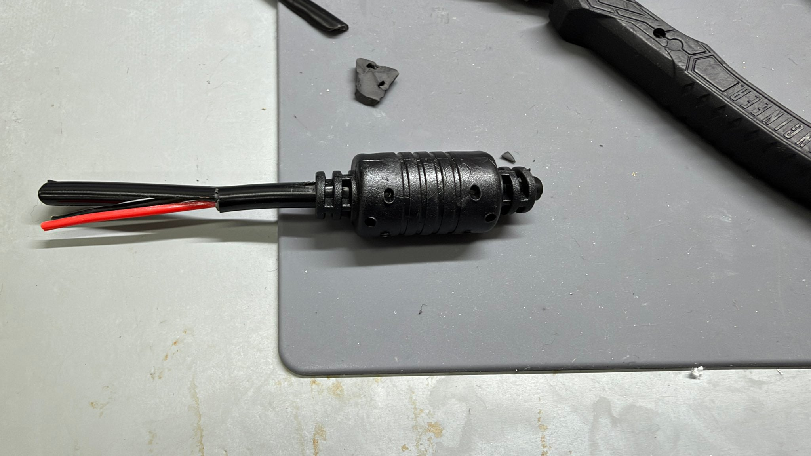
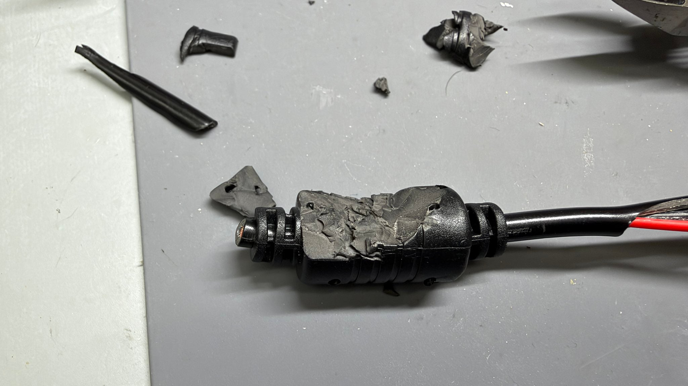
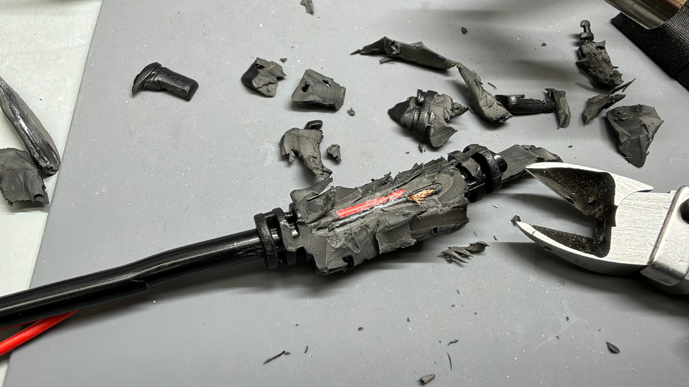
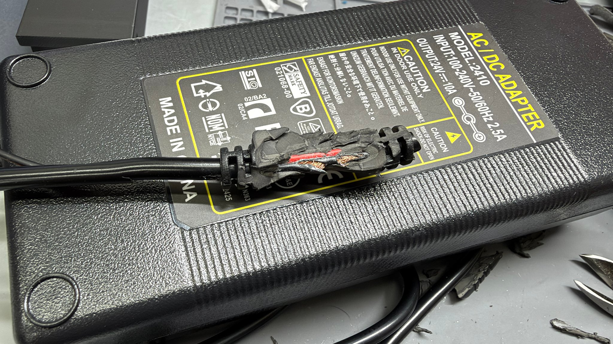
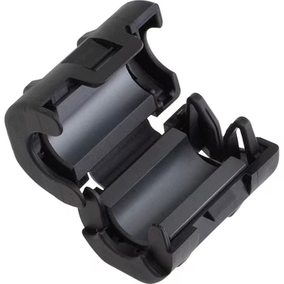

원래대로 라면 고주파 노이즈를 억제하기 위해서

저 원통형 고무 부분에 이런 산화철 자성체가 들어있어야 한다.
그런데 전파 인증 기준 규제 통과된 제품인 것처럼 위장하려고
모양만 만들어 놓고 안에 아무 것도 안 들어 있음.




원래대로 라면 고주파 노이즈를 억제하기 위해서

저 원통형 고무 부분에 이런 산화철 자성체가 들어있어야 한다.
그런데 전파 인증 기준 규제 통과된 제품인 것처럼 위장하려고
모양만 만들어 놓고 안에 아무 것도 안 들어 있음.
저 정성이면 그냥 넣어도 차이 없겟는데 ㅋㅋㅋㅋ
페라이트 코어 진짜 좆도안하는걸....ㅎㄷㄷ
저기서부터 시작임.
콘덴서 용량 존나큰거 처럼 해놓고
그 빈 깡통 안에 용량 작은 콘덴서 넣어둠
관측하지 않았다면 효과가 있었을텐데 관측해서 효과없어짐
미시세계란 참 신기해~
미시의세계 조와요 어흐
또 속냐 세호야
크 대륙~
짱~깨
??? : CCC인증이 KC인증보다 낫다!!!
순살 코어
좆도 아닌 페라이트 코어 가지고 장난칠 정도면 속은 더 심하겠지
대부분이 그렇다는거 알게되면 소름돋을껄~ (버릴때 심심해서 한번씩 쪼개보는데 항상 그렇더라고)
중국산 케이블이나 멀티탭 kc 인증 받은거 국내에 들어와서 팔던데, 처음에는 문제 없다가 나중에 들어온 모델이 문제가 가끔 있더라.
이유는?? 처음에는 kc 인증 받는다고 물건 상태가 좋고 장난을 안침. 그러다가, 몇년 지나면 물건 상태가 안 좋아짐.
전기 관련 멀티탭이나 케이블은 여유가 된다면 국산 ks 마크 붙어있는게 고장안나고 오래쓰더라
마데전자 제품이라 그리 놀랍지는 않다.
니가부셧잖아니가부셧잖아니가부셧잖아니가부셧잖아니가부셧잖아니가부셧잖아니가부셧잖아니가부셧잖아니가부셧잖아니가부셧잖아니가부셧잖아니가부셧잖아니가부셧잖아